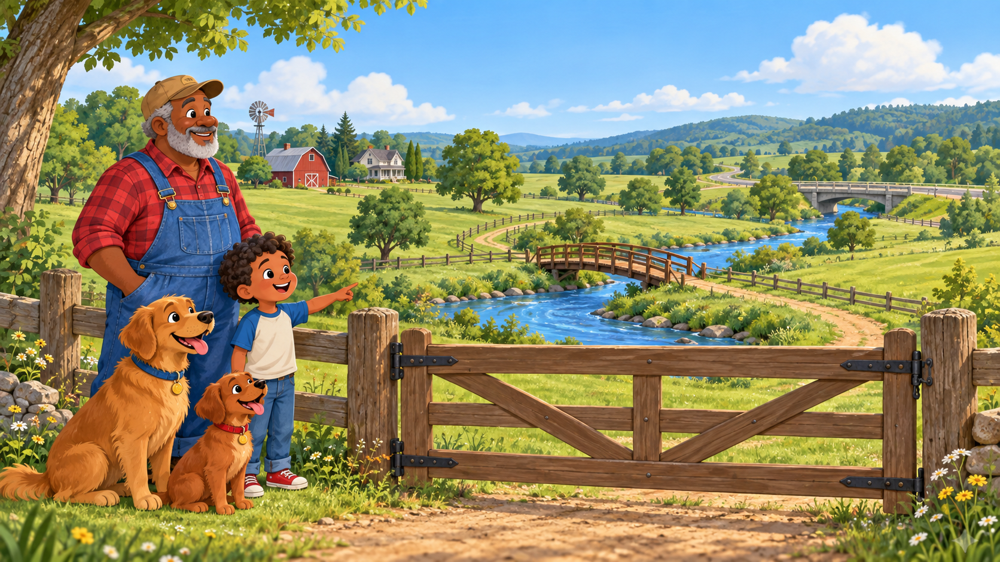
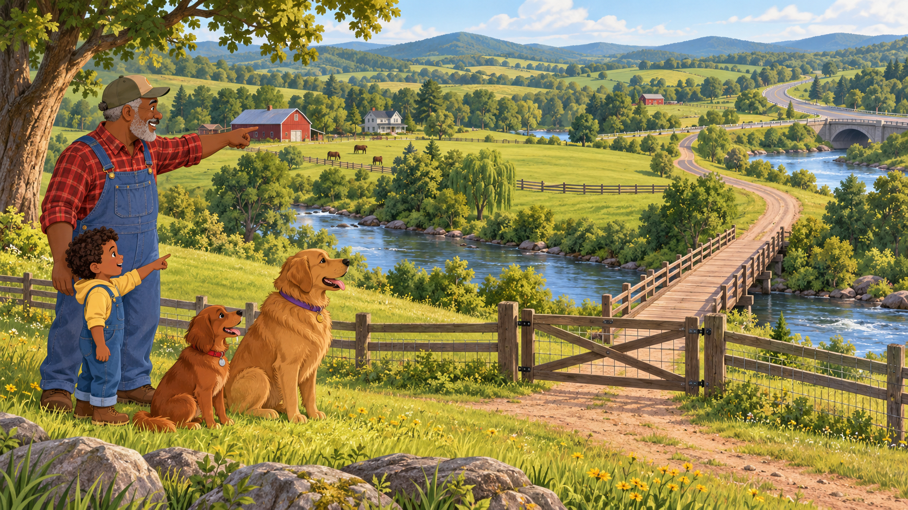
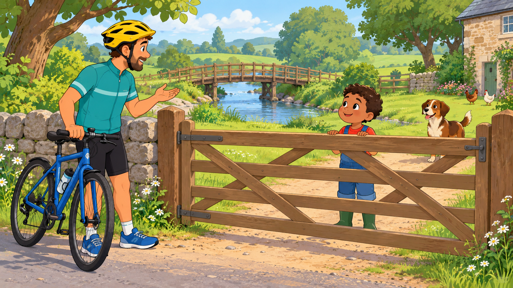
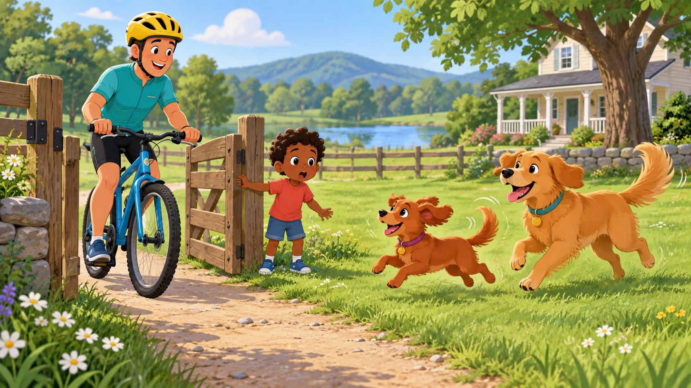
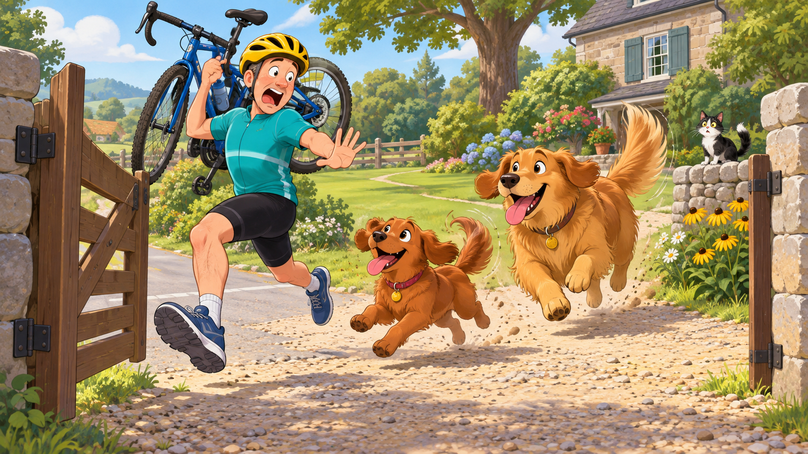
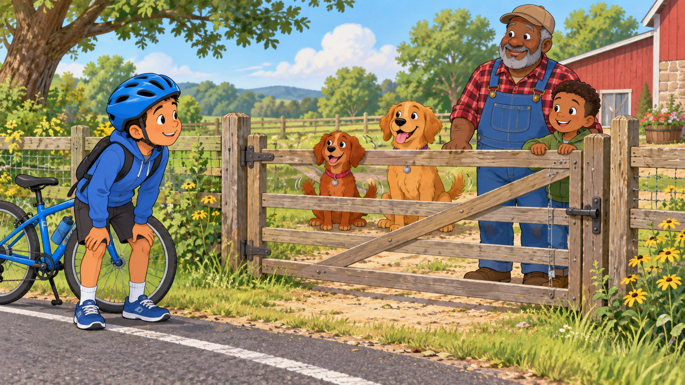
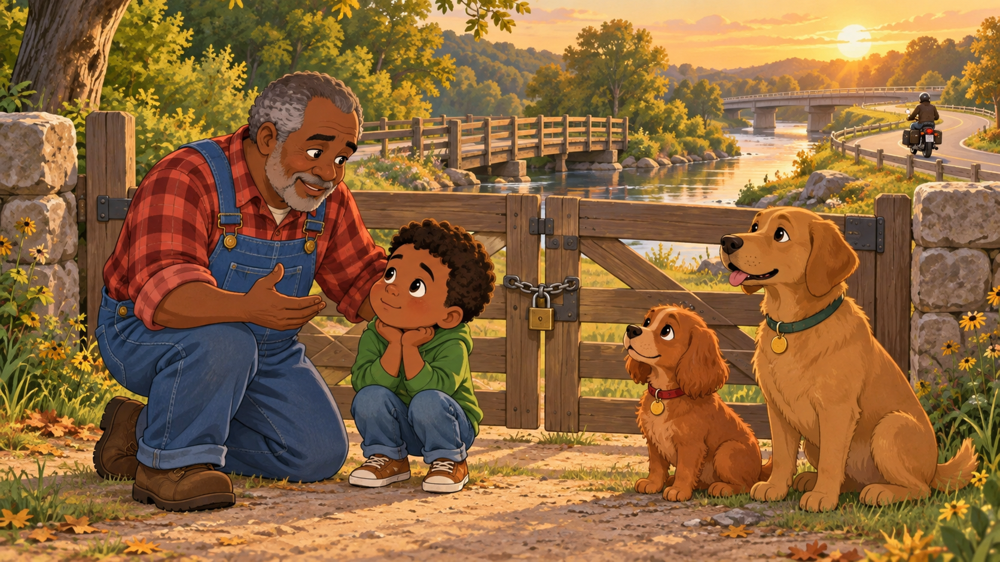

The Bridge Across GrumpyLand
Sometimes a gate is more than wood and chain.

Sometimes a gate is more than wood and chain.

GrumpyLand was vast and wide,
with fields and trees on either side.
A river rippled through the ground,
then curled and curved and wandered ’round.
Grumpy’s bridge crossed close at hand.
The road bridge stood beyond his land.
Two bridges crossed the river blue—
but each one had a job to do.

One sunny day came Bob the Biker,
a friendly, helmet-wearing rider.
He saw the bridge beyond the gate.
The road bridge route seemed long and late.
“Please open up,” said Bob. “I’ll ride
across your bridge to the other side.”
Arlo thought, That sounds okay.
So he unlatched the gate that day.

Ruby looked. Then Riley, too.
They saw a bike come rolling through.
Their tails went thump! Their paws went tap!
They raced across the grassy map.
“A brand-new friend! A game! Hooray!”
was what the happy dogs would say.
But Bob saw two big dogs run near—
and all he thought was, “Oh, dear!”

Bob grabbed his bike and held it high.
He hurried toward the gate nearby.
Ruby bounced and Riley flew.
They thought that Bob was playing, too!
Past the flowers, down the lane,
Bob ran out—and stayed in his lane.
His shortcut ended right away.
The dogs still wondered, “Why not play?”

Grumpy called the dogs to stay.
They sat and watched from far away.
Arlo closed the gate once more.
Bob caught his breath outside the door.
“They only wanted fun,” said Grumpy,
“but big dogs make a bike ride bumpy.”
Bob gave a wave. “I understand.
I should have asked who guards this land.”

Grumpy knelt by Arlo’s side
and pointed toward the countryside.
“People build bridges to help us cross.
People build fences to guard against loss.
“People close gates for reasons, too—
reasons that may not be clear to you.
So before burning a bridge, opening a gate,
or tearing down a fence, be patient and wait.
Learn why it was built and what it protects.
Understanding first is a sign of respect.
Bob took the road bridge, safe and slow.
Ruby and Riley watched him go.